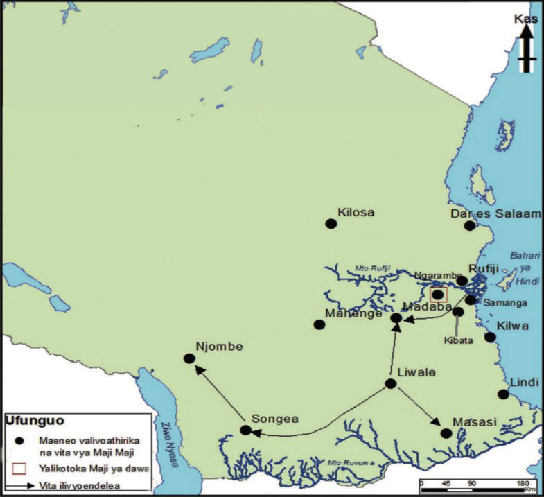

muda wa miaka miwili. Mwisho wake jamii za Afrika Mashariki ya Wajerumani zilishindwa.

Sababu za Vita vya Maji Maji
Vita hivi vilisababishwa na sababu mbalimbali ikiwa pamoja na:
(a) Utawala wa mabavu na utumiaji wa nguvu kupita kiasi - Wakoloni walitumia nguvu kupita kiasi, ambapo hata machifu, majumbe na maakida walichapwa viboko hadharani kwa kutotimiza amri za wakoloni na walowezi;
(b) Unyanyasaji na ukandamizaji uliokithiri - Wenyeji walilazimishwa kuanzisha na kulima mashamba ya pamba. Pamba ilinunuliwa na Wajerumani kwa
Historia ya Tanzania na Maadili DRS V.indd 15
08/09/2025 10:32